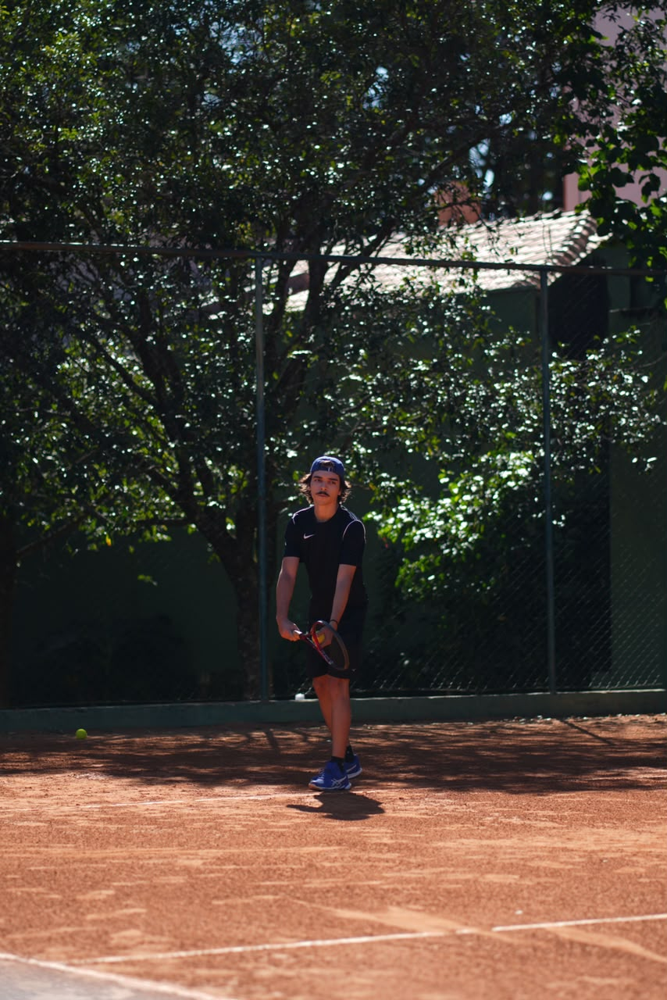
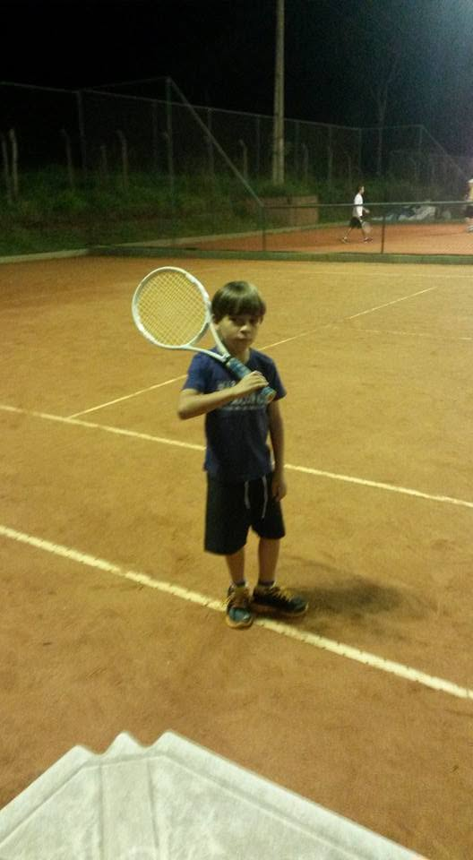

Meu Hobby: Tênis


Comecei a jogar Tênis aos sete anos, por influência do meu pai. Depois de conhecer o esporte, ele começou a praticá-lo e me levou junto. Desde então, o tênis passou a fazer parte da minha vida.
Durante a infância, fiz bastante aulas e pratiquei por alguns anos, até fazer uma pausa de aproximadamente quatro anos. Na adolescência, voltei a jogar e, com o tempo, passei a treinar com mais frequência e participar de jogos-treino. Atualmente, jogo na Academia de Tênis Dadão e também no Tênis Clube de Presidente Prudente. Já participei de alguns torneios na região, obtendo bons resultados.
Hoje, o tênis representa muito mais do que apenas um esporte para mim. É uma forma de cuidar do meu corpo e da minha mente, além de ser um momento em que consigo me desligar de outras preocupações. A prática também mudou minha maneira de enxergar situações, não apenas dentro da quadra, mas na vida de forma geral.
Gosto muito de acompanhar o tênis profissional e estou sempre buscando aprender e evoluir. Meu objetivo é participar de cada vez mais torneios e continuar aprimorando meu nível e minha qualidade técnica, sempre buscando ser melhor do que fui antes.